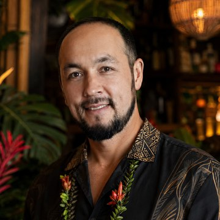

A meeting of islands & rivers
Twenty years of fruit, a bartender who took the long way round, and a building near Pha That Luang that nobody was looking for.
Every morning, before most of Vientiane is properly awake, Noy is at the market. She is not there for the prices. She is there for the fruit. She turns a mango over in her hand, presses a thumb into a papaya, sends back a crate that would have been perfectly acceptable to anyone else. The vendors know her. They have known her for twenty years, and they have learned that the negotiation is never really about money.
She opened Noy's Fruit Heaven at Sihom in 2006. It was the first shop, and it is still the one she runs today. It began as a fruit stand and became something harder to define: a place people go to sit. Long before hospitality was a word anyone used in this city, Noy was doing it: greeting, remembering, making room. The shakes are the freshest in Vientiane. But that is not why the same faces come back every week.

The long way round
Ruslan started at seventeen, carrying plates in an Armenian restaurant in Kazan. Then St Petersburg and the Renaissance, running room service trays down hotel corridors. Then Moscow and a run of Marriott hotels, where he got behind a bar for the first time and stayed there.
Then the sea. A contract with Celebrity Cruises took him out of the Bahamas, down the coast of California, and all the way south to Latin America, to Argentina, and finally to the cold hard light of Antarctica. He came back to Moscow as head bartender at the Ritz-Carlton, where he made drinks for heads of state and for faces you would recognise from films.
In 2014 he worked the Winter Olympics in Sochi, running food and beverage for a British events company on the hospitality programmes it built for its corporate clients.
After that: Singapore, running a microbrewery restaurant. Dubai, the cocktail lounge at the Ritz-Carlton. Thailand, where he ran a rooftop bar thirty-four floors above the street, and then Hilton Pattaya. And then Laos, where he came to run the restaurants and bars at Crowne Plaza Vientiane, and later opened Holiday Inn & Suites alongside it.
Twenty-three years, four continents, and one long apprenticeship in what makes a room feel good.
Somewhere in all of that, on days off, he found a fruit shop at Sihom where he could sit with a laptop and actually work. It was comfortable in a way that places rarely are. He kept going back.
Day and night
The first plan was simply more fruit. Another Noy's Fruit Heaven, somewhere new. That was the whole idea.
But Ruslan had been carrying something else for years: the bar he would build if he ever built one. He had visited tiki bars wherever work sent him. He had read the histories: Donn Beach inventing an island off Hollywood Boulevard in 1933, Trader Vic arguing about the Mai Tai, the whole strange and generous tradition of tropical drinking.
And here is the thing that made it obvious. Tiki is built on exactly what Noy already has. Fresh fruit, fresh juice, rum, ice, and someone who cares enough to squeeze the lime that afternoon. A great tiki bar and a great fruit shake come from the same instinct. Put those two in one house and you do not have a compromise. You have one idea, told twice.
So: fruit by day, rum by night. The same room, the same care, the same people. At five o'clock the light changes and the totems wake up.
The building we weren't looking for
We found it by accident. We had been eating at a coffee shop near Pha That Luang, and walking out afterwards we saw a building with a sign on it. For rent. The front had that particular Lao way of holding itself: not a temple, not a copy of anything, just proportions that felt right.
We had gone out that day for coffee, not for a building. We signed the lease anyway.
What follows a decision like that is less romantic: months of work, and the peculiar task of explaining a tiki bar to people who have never set foot in one. You are describing a room that does not exist yet, with its carved faces and crushed ice and low gold light, and asking to be trusted. Some of it we could show. Most of it we simply had to build.
What the tiki gods sent
The name came from the drink. The first idea was After Dark, as in Noy's Fruit Heaven after dark. Accurate, but it described a time of day rather than a bar. Then someone said Swizzle, and that was that. A swizzle stick is a branch from a Caribbean tree that grows with a small star of prongs at the end; you spin it between your palms until frost climbs the outside of the glass. Humble, precise, and entirely about giving someone the drink at its exact best moment. A fine set of ambitions.
The carvings were an accident too. Driving across Vientiane, we passed a shop with Balinese work in the window, stopped, and knew immediately. They were not ordered from a catalogue or designed by anyone. They were simply, unmistakably right, and now they stand at the door.
The gong we were not looking for at all. It appeared in front of us the same way. We choose to believe the tiki gods were handling logistics.
What we want you to feel
You walk in at seven. Here is the whole ambition.
We want you comfortable first, not the stiff politeness of a fine-dining room where you are wondering which glass is yours. Sit down. Bring your friends, bring your family, talk loudly, stay a while.
We want you to taste a drink that was actually made properly, because that is genuinely hard to find in this city, and it should not be. And we want you to look at the bill afterwards and feel fine about it. Good cocktails are not supposed to be a luxury purchase. They are supposed to be Tuesday.
And we want you to feel the sea. Laos is a beautiful country with no coastline, and something in all of us misses the ocean whether we have seen it or not. Tiki has always been about that: a room built to carry you somewhere warm and far away for a few hours. We are putting the Pacific behind a fruit stand in Vientiane, in a house where every mango was chosen by hand this morning.
That is Swizzle: islands and rivers, in the same glass. We hope you will come and see.